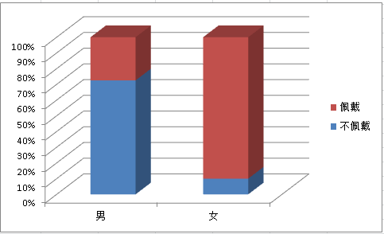

分类变量的相关分析
研究性别, 佩戴耳环, 两个变量间是否有关.
性别: 男, 女
佩戴耳环: 佩戴, 不佩戴
收集如下数据:
男, 不佩戴: 58人 男, 佩戴: 22人 女, 不佩戴: 2人 女, 佩戴: 18人
频率分布表:
| 男 | 女 | 合计 | |
|---|---|---|---|
| 不佩戴 | 58 | 2 | 60 |
| 佩戴 | 22 | 18 | 40 |
| 合计 | 80 | 20 | 100 |
频率分布图:

现在假设性别和佩戴耳环无关, 那么:
频率分布表的4个频率要重新计算, 使:
男性调查人数之和仍为80
女性调查人数之和仍为20
不佩戴人数之和 : 佩戴人数之和 = 60 : 40, 这保证了佩戴和不佩戴之间有关系, 但和性别无关.
性别和佩戴耳环无关, 频率分布表:
| 男 | 女 | 合计 | |
|---|---|---|---|
| 不佩戴 | ? | ? | 60 |
| 佩戴 | ? | ? | 40 |
| 合计 | 80 | 20 | 100 |
性别和佩戴耳环无关, 频率分布图:

已知男不佩戴和女不佩戴之和是60, 之比是80:20, 得到男不佩戴为48, 女不佩戴为12
已知男佩戴和女佩戴之和是40, 之比是80:20, 得到男佩戴为32, 女佩戴为8
性别和佩戴耳环无关, 频率分布表:
| 男 | 女 | 合计 | |
|---|---|---|---|
| 不佩戴 | 48 | 12 | 60 |
| 佩戴 | 32 | 8 | 40 |
| 合计 | 80 | 20 | 100 |
以上得到的性别和佩戴耳环无关的频率分布, 称为"期望频率"
X^2 = sum((观测频率 - 期望频率) ^ 2 / 期望频率)